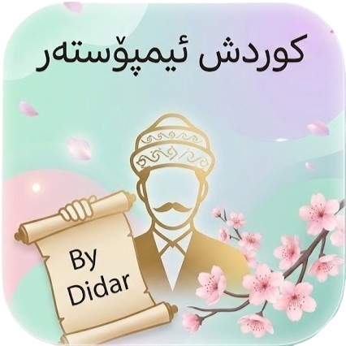

• بەخێربێن بۆ نوێترین ئەپدەیتی یاری کوردش ئیمپۆستەر ! ................... ئەم ئەپدەیتە زۆرترین گۆڕانکاری لەخۆدەگێت ! .................. استخفر الله ,سبحان الله، والحمد لله، و لا إله إلا الله والله أكبر, وحده لا شريك له، له الملك، وله الحمد، وهو على كل شيء قدير

New Kurdish Imposter
New update is available Click the button below to get the new update